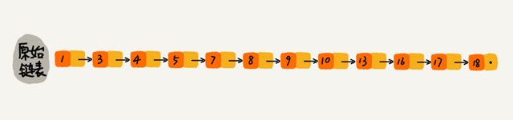
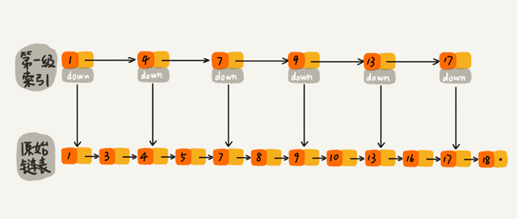
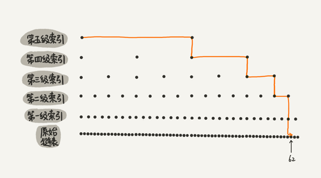
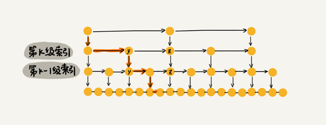
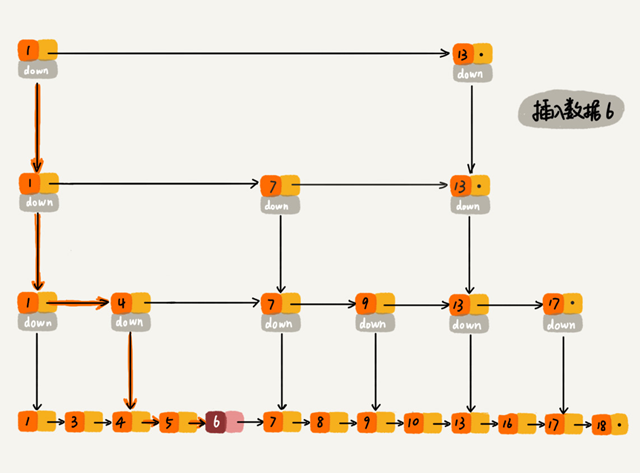
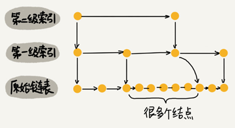
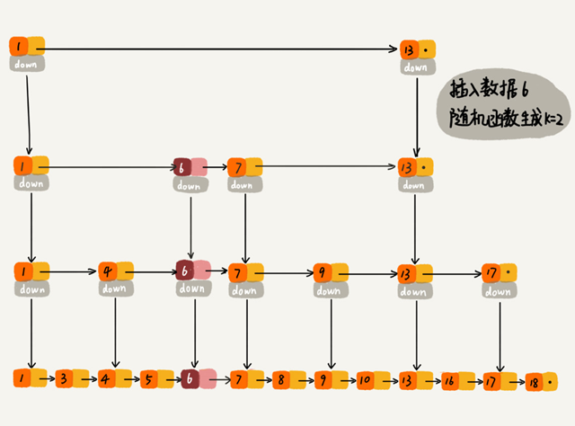

跳表=链表+多级索引
跳表使用空间换时间的设计思路，通过构建多级索引来提高查询的效率，实现了基于链表的“二分查找”。跳表是一种动态数据结构，支持快速的插入、删除、查找操作，时间复杂度都是 O(logn)。
跳表的空间复杂度是 O(n)。跳表的实现非常灵活，可以通过改变索引构建策略，有效平衡执行效率和内存消耗。跳表的代码比起红黑树来说，要简单、易读。
链表加多级索引的结构，就是跳表。
对于一个单链表，即便链表中存储的数据是有序的，如果要查找某个数据，也只能从头到尾遍历，时间复杂度是 O(n)。

对链表建立一级“索引”，每两个结点提取一个结点到上一级，把抽出来的那一级叫作索引或索引层。图中的 down 表示 down 指针，指向下一级结点。

这样就可以先在索引层遍历，然后通过索引层结点的 down 指针，下降到原始链表这一层，继续遍历。
比如要查找16，当在索引层遍历到13时，发现索引层下一个节点是17大于目标16，则可从13的down指针下降到原始链表继续遍历。这样只需要再遍历 2 个结点，就可以找到值等于 16 的这个结点了。原来查找 16，需要遍历 10 个结点，加入一层索引后只需要遍历 7 个结点。
加来一层索引之后，查找一个结点需要遍历的结点个数减少了，查找效率提高了。继续再加一级索引，在第一级索引的基础之上，每两个结点就抽出一个结点到第二级索引。现在再查找 16，只需要遍历 6 个结点了，需要遍历的结点数量又减少了。

下图是一个包含 64 个结点的链表，建立五级索引。

在五级索引的作用下，查找 62 只需要遍历 11 个结点。当链表的长度 n 比较大时，比如 1000、10000 的时候，在构建多级索引之后，查找效率的提升就会非常明显。
跳表的时间复杂度分析
一个链表里有 n 个结点，每两个结点会抽出一个结点作为上一级索引的结点，那第一级索引的结点个数大约就是 n/2，第二级索引的结点个数大约就是 n/4，第三级索引的结点个数大约就是 n/8，依次类推，也就是说，第 k 级索引的结点个数是第 k-1 级索引的结点个数的 1/2，那第 k级索引结点的个数就是 $n/(2^k)$。
假设索引有 h 级，最高级的索引有 2 个结点，则 $n/(2^h)=2$，即 $h=log_2n-1$。加上原始链表这一层，整个跳表的高度就是 $log_2n$。在跳表中查询某个数据的时候，如果每一层都要遍历 m 个结点，那在跳表中查询一个数据的时间复杂度就是 $O(m*logn)$。
按照每两个结点提取一个结点到上一级建立索引这种结构，每一级索引都最多只需要遍历 3 个结点，那么m=3.
假设要查找的数据是 x，在第 k 级索引中遍历到 y 结点之后，发现 x 大于 y，小于后面的结点 z，所以通过 y 的 down 指针，从第 k 级索引下降到第 k-1 级索引。在第 k-1 级索引中，y 和 z 之间只有 3 个结点（包含 y 和 z），所以在 K-1 级索引中最多只需要遍历 3 个结点，依次类推，每一级索引都最多只需要遍历 3 个结点。

所以在跳表中查询任意数据的时间复杂度就是 O(logn)。
跳表的空间复杂度分析
假设原始链表大小为 n，那第一级索引大约有 n/2 个结点，第二级索引大约有 n/4 个结点，以此类推，每上升一级就减少一半，直到剩下 2 个结点。每层索引的节点数为：
$$
\frac{n}2,\frac{n}4,\frac{n}8,…,8,4,2
$$
这几级索引的结点总和就是 $\frac{n}2+\frac{n}4+\frac{n}8+…+8+4+2=n-2$。所以跳表的空间复杂度是 O(n)。
将包含 n 个结点的单链表构造成跳表，需要额外再用接近 n 个结点的存储空间。
如果每三个结点或五个结点，抽一个结点到上级索引:

那第一级索引需要大约 n/3 个结点，第二级索引需要大约 n/9 个结点。每往上一级，索引结点个数都除以 3。为了方便计算，假设最高一级的索引结点个数是 1。每3个节点抽一个，每层索引的节点数为：
$$
\frac{n}3,\frac{n}9,\frac{n}{27},…,9,3,1
$$
总的索引结点个数为$\frac{n}{3}+\frac{n}{9}+\frac{n}{27}+…+9+3+1=n/2$。空间复杂度依然是 O(n)，但比每两个结点抽一个结点的索引构建方法，减少了一半的索引结点存储空间。
在实际的软件开发中，原始链表中存储的有可能是很大的对象，而索引结点只需要存储关键值和几个指针，并不需要存储对象，所以当对象比索引结点大很多时，那索引占用的额外空间就可以忽略了。
跳表动态的插入和删除
跳表插入、删除操作的时间复杂度是 O(logn)。

对于删除操作，如果这个结点在索引中也有出现，删除原始链表中的结点之后还要删除对应的索引。
查找要删除的结点的时候，一定要获取前驱结点（双向链表不需要考虑这个问题）。
跳表索引动态更新
不停地往跳表中插入数据时，如果不更新索引，就有可能出现某 2 个索引结点之间数据非常多的情况。极端情况下，跳表还会退化成单链表。

作为一种动态数据结构，需要某种手段来维护索引与原始链表大小之间的平衡：
如果链表中结点多了，索引结点就相应地增加一些，避免复杂度退化，以及查找、插入、删除操作性能下降。
往跳表中插入数据的时候，可以同时将这个数据插入到部分索引层中。通过一个随机函数，来决定将这个结点插入到哪几级索引中，比如随机函数生成了值 K，就将这个结点添加到第一级到第 K 级这 K 级索引中。

Redis 用跳表实现有序集合
Redis 中的有序集合是通过跳表来实现的，严格点讲，其实还用到了散列表。
Redis 中的有序集合支持的核心操作主要有：
- 插入一个数据；
- 删除一个数据；
- 查找一个数据；
- 按照区间查找数据（比如查找值在 [100, 356] 之间的数据）；
- 迭代输出有序序列。
其中，插入、删除、查找以及迭代输出有序序列这几个操作，红黑树也可以完成，时间复杂度跟跳表是一样的。但是，按照区间来查找数据这个操作，红黑树的效率没有跳表高。
对于按照区间查找数据这个操作，跳表可以做到 O(logn) 的时间复杂度定位区间的起点，然后在原始链表中顺序往后遍历就可以了。这样做非常高效。
跳表相对红黑树而言代码更容易实现，简单就意味着可读性好，不容易出错。还有，跳表更加灵活，它可以通过改变索引构建策略，有效平衡执行效率和内存消耗。
跳表的简易代码实现
跳表的java实现：
public class SkipList {
private static final float SKIPLIST_P = 0.5f;
private static final int MAX_LEVEL = 16;
private int levelCount = 1;
private Node cls = new Node(); // 带头链表
public Node find(int value) {
Node p = cls;
for (int i = levelCount - 1; i >= 0; --i) {
while (p.forwards[i] != null && p.forwards[i].data < value) {
p = p.forwards[i];
}
}
if (p.forwards[0] != null && p.forwards[0].data == value) {
return p.forwards[0];
} else {
return null;
}
}
public void insert(int value) {
int level = randomLevel();
Node newNode = new Node();
newNode.data = value;
newNode.maxLevel = level;
Node update[] = new Node[level];
for (int i = 0; i < level; ++i) {
update[i] = cls;
}
// record every level largest value which smaller than insert value in update[]
Node p = cls;
for (int i = level - 1; i >= 0; --i) {
while (p.forwards[i] != null && p.forwards[i].data < value) {
p = p.forwards[i];
}
update[i] = p;// use update save node in search path
}
// in search path node next node become new node forwords(next)
for (int i = 0; i < level; ++i) {
newNode.forwards[i] = update[i].forwards[i];
update[i].forwards[i] = newNode;
}
// update node hight
if (levelCount < level) levelCount = level;
}
public void delete(int value) {
Node[] update = new Node[levelCount];
Node p = cls;
for (int i = levelCount - 1; i >= 0; --i) {
while (p.forwards[i] != null && p.forwards[i].data < value) {
p = p.forwards[i];
}
update[i] = p;
}
if (p.forwards[0] != null && p.forwards[0].data == value) {
for (int i = levelCount - 1; i >= 0; --i) {
if (update[i].forwards[i] != null && update[i].forwards[i].data == value) {
update[i].forwards[i] = update[i].forwards[i].forwards[i];
}
}
}
while (levelCount>1&&cls.forwards[levelCount]==null){
levelCount--;
}
}
// 理论来讲，一级索引中元素个数应该占原始数据的 50%，二级索引中元素个数占 25%，三级索引12.5% ，一直到最顶层。
// 因为这里每一层的晋升概率是 50%。对于每一个新插入的节点，都需要调用 randomLevel 生成一个合理的层数。
// 该 randomLevel 方法会随机生成 1~MAX_LEVEL 之间的数，且 ：
// 50%的概率返回 1
// 25%的概率返回 2
// 12.5%的概率返回 3 ...
private int randomLevel() {
int level = 1;
while (Math.random() < SKIPLIST_P && level < MAX_LEVEL)
level += 1;
return level;
}
public void printAll() {
Node p = cls;
while (p.forwards[0] != null) {
System.out.print(p.forwards[0] + " ");
p = p.forwards[0];
}
System.out.println();
}
public class Node {
private int data = -1;
private Node forwards[] = new Node[MAX_LEVEL];
private int maxLevel = 0;
@Override
public String toString() {
StringBuilder builder = new StringBuilder();
builder.append("{ data: ");
builder.append(data);
builder.append("; levels: ");
builder.append(maxLevel);
builder.append(" }");
return builder.toString();
}
}
}python实现：
# -*- coding: utf-8 -*-
__author__ = 'xiaoxiaoming'
import random
class SkipListNode(object):
def __init__(self, val, max_level=1):
self.data = val # 节点存储的值
self.forwards = [None] * max_level # 节点对应索引层的深度
class SkipList(object):
"""
跳表的一种实现方法。
跳表中储存的是不重复的正整数。
"""
def __init__(self):
self.__MAX_LEVEL = 16 # 索引层的最大深度
self.SKIPLIST_P = 0.5 # 索引生成层数的随机因子
self._level_count = 1 # 跳表的深度
self._head = SkipListNode(None, self.__MAX_LEVEL) # 带头链表
def find(self, val):
p = self._head
# 从索引的顶层, 逐层定位要查找的值
# 索引层上下是对应的, 下层的起点是上一个索引层中小于插入值的最大值对应的节点
for i in range(self._level_count - 1, -1, -1):
# 同一索引层内, 查找小于插入值的最大值对应的节点
while p.forwards[i] and p.forwards[i].data < val:
p = p.forwards[i]
if p.forwards[0] and p.forwards[0].data == val:
return p.forwards[0]
return None
def insert(self, val):
'''
新增时, 通过随机函数获取要更新的索引层数,
要对低于给定高度的索引层添加新结点的指针
'''
level = self.random_level()
# 更新跳表索引层数
if self._level_count < level: self._level_count = level
new_node = SkipListNode(val, level) # 申请新结点
# cache用来缓存对应索引层中小于插入值的最大节点
cache = [None] * level
# 在低于随机高度的每一个索引层寻找小于插入值的节点
p = self._head
# 缓存每一个索引层定位小于插入值的节点
for i in range(level - 1, -1, -1):
while p.forwards[i] and p.forwards[i].data < val:
p = p.forwards[i]
cache[i] = p
# 在小于高度的每个索引层中插入新结点
for i in range(level):
new_node.forwards[i] = cache[i].forwards[i]
cache[i].forwards[i] = new_node
def delete(self, val):
'''
删除时, 要将每个索引层中对应的节点都删掉
'''
# cache用来缓存对应索引层中小于插入值的最大节点
cache = [None] * self._level_count
p = self._head
# 缓存每一个索引层定位小于插入值的节点
for i in range(self._level_count - 1, -1, -1):
while p.forwards[i] and p.forwards[i].data < val:
p = p.forwards[i]
cache[i] = p
# 如果给定的值存在, 更新索引层中对应的节点
if p.forwards[0] and p.forwards[0].data == val:
for i in range(self._level_count):
if cache[i].forwards[i] and cache[i].forwards[i].data == val:
cache[i].forwards[i] = cache[i].forwards[i].forwards[i]
# 更新跳表的深度
while self._level_count > 1 and self._head.forwards[self._level_count] == None:
self._level_count -= 1
def random_level(self):
"""
一级索引中元素个数应该占原始数据的 SKIPLIST_P,二级索引中元素个数占SKIPLIST_P^2,三级索引SKIPLIST_P^3,一直到最顶层。
每一层的晋升概率是 SKIPLIST_P。对于每一个新插入的节点，都需要调用 randomLevel 生成一个合理的层数。
该 randomLevel 方法会随机生成 1~MAX_LEVEL 之间的数
:return: 按概率返回 1-MAX_LEVEL中的一个值
"""
level = 1
while random.random() < self.SKIPLIST_P and level < self.__MAX_LEVEL:
level += 1
return level
def __repr__(self):
vals = []
p = self._head
while p.forwards[0]:
vals.append(str(p.forwards[0].data))
p = p.forwards[0]
return '->'.join(vals)
def print_all(self):
for i in range(self._level_count - 1, -1, -1):
p = self._head
print("level:", i)
while p.forwards[i]:
print(str(p.forwards[i].data), end="->")
p = p.forwards[i]
print()
if __name__ == '__main__':
sl = SkipList()
for i in range(100):
sl.insert(i)
if i % 10 == 5:
sl.print_all()
sl.print_all()
p = sl.find(7)
print(p.data)
sl.delete(37)
print(sl)
sl.delete(37.5)
print(sl)